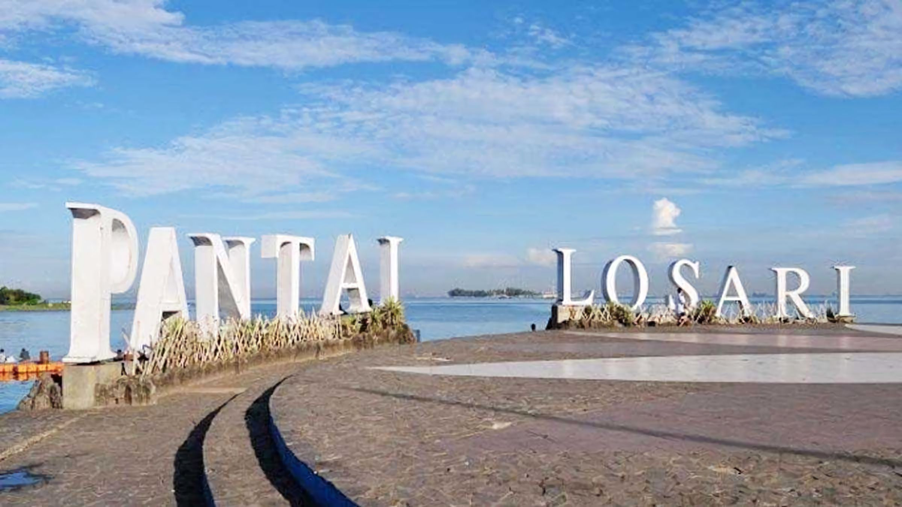

Destinasi Unggulan

Pantai Losari
Pantai ikonik Makassar dengan pemandangan matahari terbenam terindah. Nikmati kuliner seafood segar di sepanjang pantai.
Selengkapnya
Benteng Rotterdam
Benteng peninggalan Kerajaan Gowa-Tallo yang menjadi saksi sejarah Makassar. Kini berfungsi sebagai museum budaya.
Selengkapnya
Pulau Samalona
Pulau kecil dengan pasir putih dan air laut jernih, ideal untuk snorkeling dan diving menikmati terumbu karang.
Selengkapnya